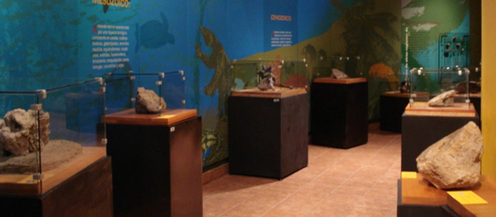
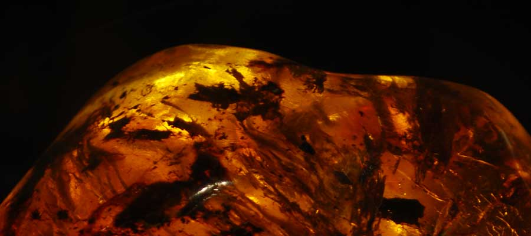
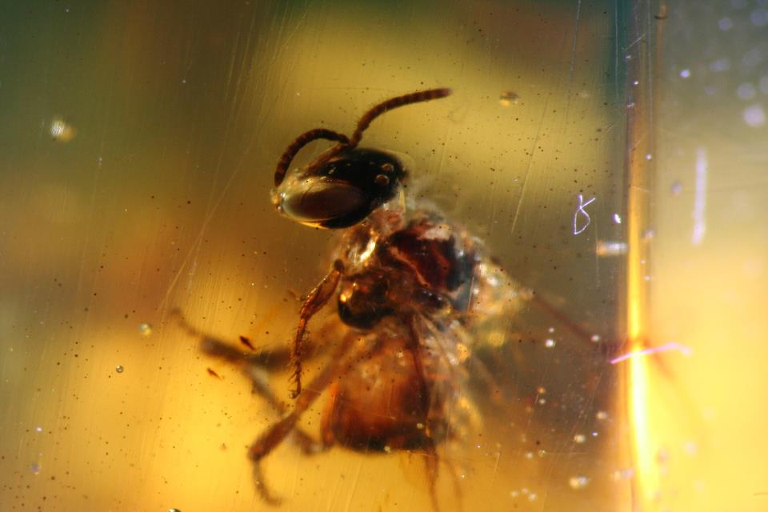
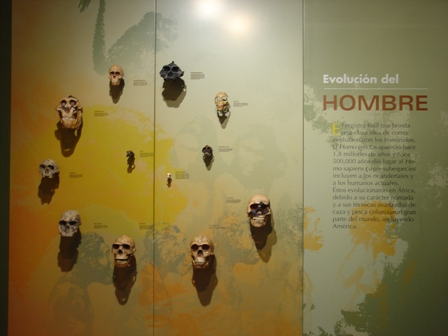
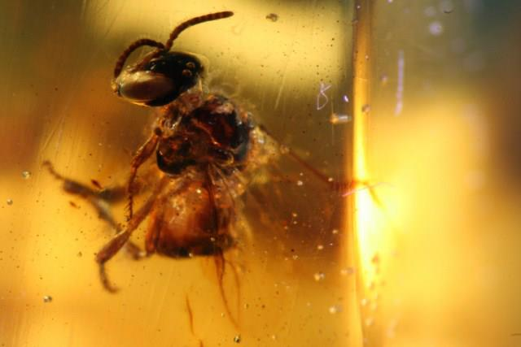

Este museo fue construido a finales de 1999 e inaugurado el 21 de octubre de 2002. Hasta el momento es el único museo en su tipo en todo el sur-sureste de México, este espacio muestra la evolución de la flora y fauna en piezas petrificadas y recreaciones que existieron, especialmente, en tierras mayas; el Museo alberga aproximadamente unos 5000 ejemplares que pertenecen a los siguientes grupos: foraminíferos, celenterados, briozoarios, anélidos, crustáceos, equinodermos, moluscos, insectos, reptiles, peces, mamíferos, vegetales, cuyas antigüedades oscilan entre los 300 millones de años y los 10 mil años. La sala principal está coronada por la reconstrucción de un megaterio.
El Museo cuenta con ocho principales exposiciones que son: Jardín prehistórico, Introducción a la paleontología, La vida a través del tiempo, Fósiles de Chiapas, Del campo al laboratorio, Paisajes antiguos de Chiapas, Fósiles de otras regiones, Ámbar de Chiapas.Calz. de los Hombres Ilustres s.n. Tuxtla Gutiérrez, Chiapas. Adjunto al Jardín Botánico.
Contacto:
Tel. 60 00254 Ext. 119 y 121
Web: www.semahn.chiapas.gob.mx
FB: semahn chiapas
Del parque central, continuar por la calle central norte, después girar a la derecha e incorporarse a la 5ª av. Norte oriente, hacer un recorrido de aprox. A 600 mts para después girar ligeramente a la derecha y tomar la calzada de Los Hombres Ilustres, el Museo de Paleontología encuentra frente al Teatro de la Ciudad, Museo Regional y adjunto al jardín botánico. Este edificio se identifica bajo el nombre de “Museo de Paleontología Eliseo Palacios Aguilera”.
Visitas guiadas: Este servicio se otorga a quien lo solicite (grupos de 15 personas), Se cuenta con una sala de usos múltiples, Cursos de verano para niños de 6-12 años, Paleo-paquetes: Eras Geológicas, Fósiles, Ámbar de Chiapas, Dinosaurios, Volcanes de Chiapas y Cambio Climático Global, Eventos culturales: Aniversario del Museo de Paleontología, el 21 de Octubre, Colecciones digitalizadas, Archivo fotográfico de fósiles, Acervo bibliográfico referentes a Paleontología, Tienda con diversos artículos.





posicione el mouse sobre las imágenes